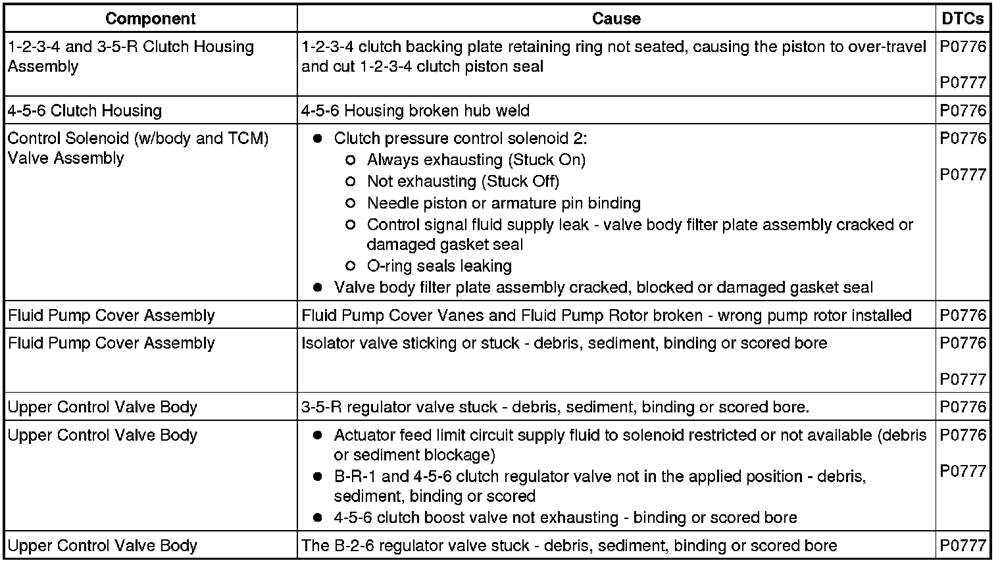
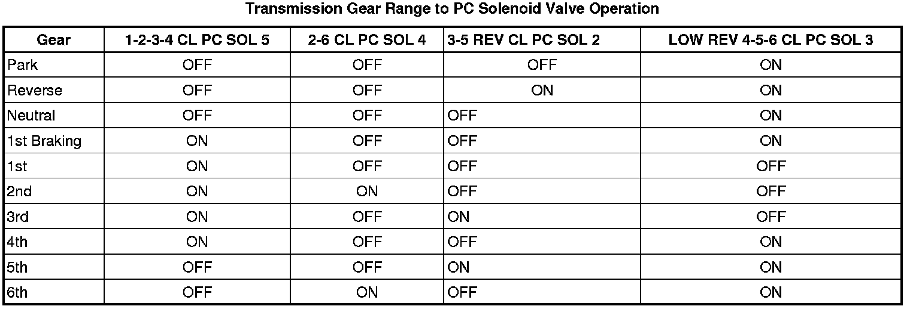
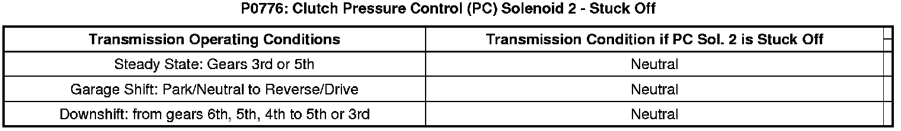
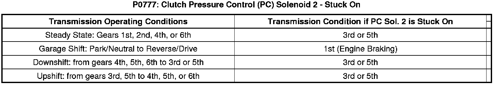

P0776
DTC P0776 or P0777
Diagnostic Instructions
* Perform the Diagnostic System Check - Vehicle (Initial Inspection and Diagnostic Overview) prior to using this diagnostic procedure.
* Review Strategy Based Diagnosis (Initial Inspection and Diagnostic Overview) for an overview of the diagnostic approach.
* Diagnostic Procedure Instructions (Initial Inspection and Diagnostic Overview) provides an overview of each diagnostic category.
DTC Descriptors
DTC P0776
- Clutch Pressure Control (PC) Solenoid 2 - Stuck Off
DTC P0777
- Clutch Pressure Control (PC) Solenoid 2 - Stuck On
Diagnostic Fault Information
The following fault table will help determine if a hydraulic circuit or an incorrect position of a valve train component affects the transmission operation.


Circuit/System Description
The clutch pressure control (PC) solenoid 2 is integral to the control solenoid (w/body and TCM) valve assembly and has no serviceable parts. The PC solenoid 2 is a normally high-pressure control solenoid which provides fluid pressure to the 3-5-R clutch regulator valve. The TCM controls the solenoid pressure by regulating the exhaust fluid. When the TCM commands the solenoid off, the exhausting fluid is stopped and the 3-5-R pressure is high. When commanded on, the clutch PC solenoid 2 regulates the amount of exhausting transmission fluid. Solenoid power is supplied by the TCM through a high side driver (HSD). The HSD protects the circuits and components that the TCM powers. Should the circuit overload the driver will shutdown. After the overload is removed the HSD reset.
Conditions for Running the DTC
P0776
* No DTCs P0716 or P0717 are active or have failed this key on.
* No DTCs P0722 or P0723 are active or have failed this key on.
* No DTC P1825 is active or has failed this key on.
* Ignition voltage is between 8.6-18.0 volts.
* Transmission fluid temperature (TFT) is equal to or greater than 0°C (32°F).
* TCM high side driver (HSD) 1 is enabled.
* Average driven wheel speed is 80 RPM or more.
* Side to side average wheel speed between driven and non-driven wheel is 150 RPM or less for 6 seconds.
* The transmission input shaft speed is greater than 60 RPM.
* PC solenoid 2 is commanded On.
* 3rd (1.532:1) or 5th (0.852:1) gear ratio has been achieved.
P0777
* No DTCs P0716 or P0717 are active or have failed this key on.
* No DTCs P0722 or P0723 are active or have failed this key on.
* No DTC P1825 is active or has failed this key on.
* TFT is equal to or greater than 0°C (32°F).
* The transmission input and output shaft speed is greater than 200 RPM.
* PC solenoid 2 is commanded Off.
Conditions for Setting the DTC
P0776
The TCM detects an incorrect on-coming clutch gear ratio, or flare, when the 3-5-R clutch is commanded On for 2.25 seconds and the transmission input shaft speed is greater than 60 to 100 RPM from the anticipated input shaft speed.
P0777
The TCM detects an incorrect off-going clutch gear ratio, or tie-up, when the 3-5-R clutch is commanded Off for 1.2 seconds and the transmission input shaft speed is greater than 40 RPM from the anticipated input shaft speed.
Action Taken When the DTC Sets
* DTCs P0776 and P0777 are Type A DTCs. Refer to Diagnostic Trouble Code (DTC) Type Definitions (Diagnostic Trouble Code Descriptions) and Diagnostic Trouble Code (DTC) List/Type (Diagnostic Trouble Code Descriptions) .
* The TCM commands maximum line pressure.
* The TCM inhibits TCC.
* The TCM freezes transmission adaptive functions.
Conditions for Clearing the DIC/DTC
DTCs P0776 and P0777 are Type A DTCs.
Diagnostic Aids
* When attempting to set transmission performance DTCs, observe the Freeze Frame and Failure Records to assist in duplicating the failure conditions.
* If diagnosing a P0776 DTC and you know the 3-5-R Clutch is not stuck On, inspect for a sticking clutch select valve 2.
* If by shifting to reverse you obtain a neutral state, PC Sol. 2 could be stuck off. Perform a Control Solenoid Valve and Transmission Control Module Assembly Solenoid Performance Test (Control Solenoid Valve and Transmission Control Module Assembly Solenoid Performance Test) to verify the solenoid is stuck off.
* If by shifting to neutral you obtain a reverse state, PC Sol. 2 could be stuck on. Perform a Control Solenoid Valve and Transmission Control Module Assembly Solenoid Performance Test (Control Solenoid Valve and Transmission Control Module Assembly Solenoid Performance Test) to verify the solenoid is stuck on.
* Use the scan tool to view the TFP Switch status and refer to the Transmission Fluid Pressure Switch Logic (Transmission Fluid Pressure Switch Logic) table to determine when a TFP switch should be active or inactive for a given gear. This will help to determine if the hydraulic circuit functioning and if the PC solenoid or the valve train is in an incorrect position.
Reference Information
Schematic Reference
* Drive Range, Third Gear (Drive Range, Third Gear)
* Drive Range, Fifth Gear (Drive Range, Fifth Gear)
Description and Operation
Transmission Component and System Description (Transmission Component and System Description)
DTC Type Reference
Powertrain Diagnostic Trouble Code (DTC) Type Definitions (Diagnostic Trouble Code Descriptions)
Scan Tool Reference
Control Module References (Programming and Relearning) for scan tool information
Special Tools
DT-47825 Control Solenoid Test Plate
Circuit/System Verification
1. Perform the Transmission Fluid Check (Transmission Fluid Check) . The fluid must be full and in good condition.
2. Start engine in park and wait a moment. Shift to Reverse, pause, and then shift to Drive (D6) without allowing the vehicle to move.
3. View scan tool parameters Commanded Gear and Gear Ratio.
4. Operate the vehicle in drive from a complete stop, with the calculated throttle position greater than 15 percent to obtain 56 km/h (35 mph) or more.
5. Make certain 3rd, 5th and Reverse gears are attainable. Use the two scan tool parameters and refer to the Shift Solenoid Valve State and Gear Ratio (6L50/6L80/6L90 - Automatic Transmission) table to verify the correct ratio for the commanded gear.
• If the DTC resets, go to Circuit/System Testing.
Circuit/System Testing
1. Perform the Line Pressure Check (Line Pressure Check) .
• If the pressure is out of specification, correct this concern first.
2. Perform the Control Solenoid Valve and Transmission Control Module Assembly Cleaning (Control Solenoid Valve and Transmission Control Module Assembly Cleaning) and retest the DTC as outlined in the Circuit/System Verification steps.
• If the DTC resets, continue with testing.
3. Perform the Control Solenoid Valve and Transmission Control Module Assembly Inspection (Control Solenoid Valve and Transmission Control Module Assembly Inspection) .
• If a concern is found, repair or replace the control solenoid (w/body and TCM) valve assembly.
4. Perform the Control Solenoid Valve and Transmission Control Module Assembly Solenoid Performance Test (Control Solenoid Valve and Transmission Control Module Assembly Solenoid Performance Test) .
• If the solenoid is found to be leaking or stuck closed, replace the control solenoid (w/body and TCM) valve assembly.
5. Inspect the control valve upper body assembly for sticking valves, damage, scored bores, or debris.
• If a concern if found in the valve body, repair or replace the valve body as necessary.
6. Inspect the 3-5-R clutch assembly for damage.
• If a concern is found in the 3-5-R clutch assembly, repair or replace as necessary.
Component Testing
Operating the transmission in the following condition will verify the PC solenoid or a portion of the hydraulic control circuit is not functioning as it should.


Repair Instructions
Perform the Diagnostic Repair Verification (Verification Tests) after completing the diagnostic procedure.
* Control valve body replacement. Refer to Control Valve Lower Body and Upper Body Replacement (Service and Repair) .
* 3-5-R clutch assembly repair or replace. Refer to 1-2-3-4 and 3-5 Reverse Clutch Overhaul (6L50/6L80) (Overhaul) .
* Control solenoid (w/body and TCM) valve assembly replacement. Refer to Control Module References (Programming and Relearning) for replacement, setup, and programming.
* Perform the Service Fast Learn Adapts (Programming and Relearning) if internal transmission repairs are performed.